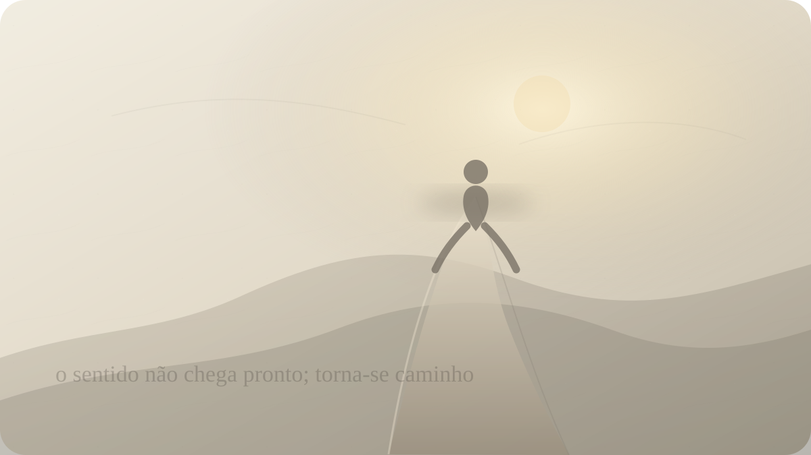

Falta de propósito
E se ninguém puder lhe entregar um sentido?
Nietzsche e a tarefa difícil de não terceirizar a razão de viver.

Há um tipo de cansaço que não vem apenas do excesso de tarefas. A pessoa dorme, trabalha, responde mensagens, cumpre obrigações, conversa, compra, planeja, entretém-se, e ainda assim sente uma espécie de pergunta muda por baixo de tudo: para quê?
Essa pergunta pode aparecer no meio de uma rotina aparentemente funcional. Nada desmoronou de modo visível. A vida segue. Mas alguma coisa perdeu densidade. As conquistas parecem menores depois de alcançadas. As metas repetem uma linguagem que já não convence. O futuro continua existindo, porém sem promessa interna. A pessoa não quer necessariamente morrer; ela apenas não sabe mais por que continuar vivendo do modo como vive.
Nietzsche entra nesse território como um pensador perigoso porque não oferece anestesia. Ele não diz que há um sentido pronto esperando por você. Não consola com a ideia de que tudo acontece por uma razão. Não transforma sofrimento em lição automática. Sua pergunta é mais dura: e se a ausência de um sentido dado não for um erro do mundo, mas a condição a partir da qual você precisa criar?
Essa ideia costuma ser domesticada em frases motivacionais. Nietzsche vira pôster de superação, combustível para produtividade, licença para individualismo barulhento. Mas o problema que ele viu era mais profundo. Quando antigas garantias metafísicas perdem força, quando Deus, a tradição, a moral herdada ou a ordem social deixam de fornecer um horizonte incontestável, o ser humano não fica simplesmente livre. Fica também exposto ao vazio.
A famosa declaração da morte de Deus, em A Gaia Ciência, não é apenas uma provocação ateísta. Ela é um diagnóstico cultural. Nietzsche percebe que a fonte tradicional de valor do Ocidente já não sustentava a consciência moderna do mesmo modo. O problema não era apenas deixar de acreditar. O problema era: se aquilo que dava medida, finalidade e fundamento deixa de comandar a vida, de onde virão os valores?
A falta de propósito contemporânea muitas vezes vive dentro dessa herança. Mesmo quem não pensa em termos religiosos pode desejar que alguma instância externa confirme seu caminho: família, carreira, amor romântico, aprovação social, mercado, destino, algoritmo, ideologia, espiritualidade, sucesso. Queremos que algo diga: é isto, siga por aqui, sua vida está justificada.
Mas Nietzsche desconfiaria dessa fome de autorização. Talvez parte da nossa angústia venha de esperar que o sentido chegue como documento assinado por uma autoridade invisível. Enquanto isso não acontece, permanecemos suspensos, como se viver fosse imprudente sem uma garantia prévia.
A dificuldade é que sentido não é a mesma coisa que conforto. Um sentido verdadeiro pode exigir perda, disciplina, solidão, mudança de pele, confronto com a própria covardia. Pode não agradar a família. Pode não gerar aplauso. Pode nem parecer sentido no começo. Às vezes começa como uma recusa: não posso mais viver segundo este valor, esta mentira, esta imitação.
Nietzsche é um pensador da criação de valores porque percebe o perigo de apenas destruir. Quando os antigos ídolos caem, não surge automaticamente uma vida mais livre. Pode surgir niilismo: a sensação de que nada vale, nada importa, nada merece esforço. O niilismo não é sempre desespero dramático. Muitas vezes é uma vida funcional sem crença real em seus próprios gestos.
A pessoa continua indo. Mas por dentro algo já se retirou.
Por isso a pergunta pelo propósito não pode ser tratada como escolha de tema para agenda. Não basta perguntar o que você gosta, qual carreira combina, qual sonho parece bonito. Antes disso, talvez seja preciso perguntar quais valores ainda estão vivos em você e quais são apenas heranças obedecidas por medo.
Nietzsche não separa sentido de força vital. Um valor não é verdadeiro apenas porque foi recebido, repetido ou considerado nobre. Ele precisa ser capaz de intensificar a vida, de organizar potência, de produzir forma, de sustentar ação, de transformar sofrimento em matéria criadora. Quando um valor só produz ressentimento, culpa estéril, obediência mecânica ou desprezo pela própria vida, Nietzsche o submete ao martelo.
Filosofar com o martelo, em Crepúsculo dos Ídolos, não significa destruir tudo por prazer. Significa tocar os ídolos para ouvir se estão ocos. Há ideias que parecem sólidas até serem golpeadas: devo ser admirado, devo vencer como os outros, devo ser puro, devo ser escolhido, devo encontrar uma missão perfeita, devo ter certeza antes de começar. O martelo nietzschiano pergunta: isso vive ou apenas manda?
Muita falta de propósito nasce de viver sob valores ocos. A pessoa tenta corresponder a um ideal que não ama. Persegue sucesso que não deseja. Mantém uma imagem que a empobrece. Busca aprovação de pessoas que nem respeita. Chama de responsabilidade aquilo que é medo de romper. Chama de maturidade aquilo que é desistência precoce.
Então o vazio aparece. Mas talvez o vazio não seja apenas ausência de sentido. Talvez seja protesto contra sentidos falsos.
Essa possibilidade muda tudo. Se o vazio for apenas falha, tentaremos preenchê-lo rapidamente com qualquer meta. Se ele for protesto, precisaremos escutá-lo. O que em você já não aceita continuar vivendo de segunda mão? Que valor herdado perdeu autoridade? Que desejo foi sacrificado para manter uma identidade aceitável? Que parte da sua força foi domesticada em nome de segurança?
Nietzsche não propõe que cada pessoa invente valores arbitrariamente, como quem escolhe uma roupa. A criação de valores exige corpo, risco, fidelidade ao que aumenta a vida, capacidade de suportar consequências. Não é capricho. É uma forma de responsabilidade mais pesada do que obedecer. Obedecer permite culpar o caminho. Criar obriga a responder pela direção.
Essa é uma das faces mais difíceis da liberdade. Enquanto espero que alguém me entregue sentido, posso permanecer inocente. Posso dizer que não fui chamado, não recebi sinal, não encontrei vocação, não apareceu oportunidade. Mas, se aceito que algum sentido precisa ser criado, a espera perde parte de sua nobreza. Ela pode revelar medo.
Isso não significa que todos tenham as mesmas condições de criação. Seria cruel ignorar desigualdade, doença, trauma, pobreza, luto, exaustão, violência e responsabilidades concretas. Nietzsche não deve ser usado para humilhar quem mal consegue sobreviver. Há vidas em que a primeira tarefa não é criar uma obra, mas atravessar o dia sem quebrar.
Ainda assim, mesmo dentro de limites duros, existe uma pergunta sobre direção. Não a direção grandiosa dos slogans, mas a direção mínima dos gestos: que tipo de pessoa minhas escolhas estão formando? Que forças alimento quando digo sim? Que forças alimento quando digo não? Que sofrimento aceito porque ele serve à vida, e que sofrimento preservo apenas por hábito?
Em Assim Falou Zaratustra, Nietzsche fala por imagens, parábolas, movimentos. O espírito que carrega pesos, o leão que diz não, a criança que cria novos começos. Essa sequência pode ser lida como metamorfose da relação com valores. Primeiro carregamos o que nos foi dado. Depois precisamos dizer não ao que nos domina. Só então talvez surja uma inocência criadora capaz de dizer sim sem repetir servidão.
Muita gente quer chegar direto à criança criadora sem passar pelo leão. Quer propósito sem conflito, sentido sem ruptura, autenticidade sem desaprovação, escolha sem perda. Mas criar uma vida própria frequentemente exige uma negação anterior. Não posso dizer sim ao que é meu enquanto sigo ajoelhado diante do que já não reconheço.
O propósito, nessa leitura, não é uma frase encontrada. É uma forma de fidelidade construída. Você descobre algo vivo não apenas pensando sobre ele, mas pagando o preço de organizar dias, hábitos, escolhas e renúncias ao redor dele. O sentido não cai do céu; ele se prova no modo como transforma a sua maneira de viver.
Isso também explica por que tantas respostas prontas fracassam. Alguém pode lhe dizer que o sentido é servir, amar, criar, vencer, conhecer, cuidar, rezar, construir, ajudar. Todas essas coisas podem ser verdadeiras. Mas nenhuma se torna sua apenas porque foi dita. Um valor recebido ainda precisa ser metabolizado. Precisa atravessar sua experiência, seu corpo, sua dor, sua história, sua coragem.
Nietzsche não nos dá uma lista do que deve valer. Ele força a pergunta mais desconfortável: você tem força suficiente para não mentir sobre o que ainda vale para você?
Talvez a falta de propósito seja, em alguns casos, o início de uma honestidade. A pessoa já não consegue acreditar nas respostas antigas, mas ainda não criou uma forma nova. Esse intervalo é perigoso. Pode virar cinismo, paralisia, vício em distração, desprezo por tudo. Mas também pode ser uma oficina escura. Algo ainda sem nome começa a pedir forma.
Nesse intervalo, não procure imediatamente uma grande missão. Procure sinais de vida. O que desperta atenção sem precisar de plateia? Que injustiça ainda o move? Que tarefa, mesmo difícil, o faz sentir menos dividido? Que tipo de sofrimento parece fértil, e que tipo apenas o apaga? Onde você sente medo porque algo importante está em jogo, e não apenas porque deseja aprovação?
A resposta pode ser pequena no começo. Um estudo. Um cuidado. Um trabalho melhor feito. Uma conversa honesta. Uma arte. Uma recusa. Uma disciplina. Um compromisso. Um gesto que não resolve a existência, mas a torna menos falsa.
Talvez ninguém possa lhe entregar um sentido porque, se fosse entregue pronto, não seria plenamente seu. O que vem pronto pode orientar, inspirar, chamar. Mas precisa ser recriado na vida concreta. O sentido não é posse mental; é prática encarnada.
Nietzsche nos deixa diante de uma liberdade sem abraço fácil. Se os velhos ídolos não sustentam mais sua vida, você pode tentar substituí-los por novos ídolos mais modernos. Ou pode aceitar a tarefa mais solitária: escutar o vazio até descobrir que parte dele é medo, que parte é luto e que parte é espaço aberto para criação.
A pergunta, então, não é simplesmente qual é o sentido da sua vida. Talvez seja mais honesto perguntar: que sentido você está disposto a tornar verdadeiro pelo modo como vive?
Pergunta final
Que sentido você está disposto a tornar verdadeiro pelo modo como vive?
Fontes e leituras
- NIETZSCHE, Friedrich. A Gaia Ciência. Livro III, seção 125; Livro V, seção 343.
- NIETZSCHE, Friedrich. Assim Falou Zaratustra. Prólogo e discursos sobre as três metamorfoses.
- NIETZSCHE, Friedrich. Crepúsculo dos Ídolos, ou Como Filosofar com o Martelo.
- NIETZSCHE, Friedrich. Genealogia da Moral.
- Project Gutenberg. Thus Spake Zarathustra, tradução de Thomas Common.
- Project Gutenberg. The Joyful Wisdom, tradução de Thomas Common.
Leituras relacionadas
E você, o que está sentindo agora?
Escolha seu momento e encontre uma reflexão filosófica para atravessá-lo com mais clareza.
Encontrar uma reflexão